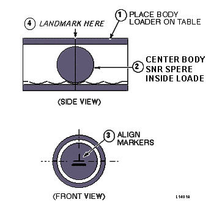
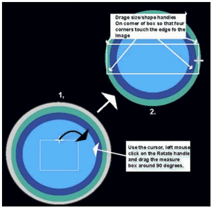

- 00000018WIA306BAF20GYZ
- id_131071091.5
- Jul 5, 2019 11:18:59 PM
Signal To Noise Check-Body Scan
Prerequisites
| Required persons | Preliminary requirements | Procedure | Finalization |
|---|---|---|---|
| 1 | - | - | - |
| Item | Quantity | Effectivity | Part number | Manufacturer |
|---|---|---|---|---|
| · Body SNR Sphere | 1 | - |
46-265635G4 | - |
| · SPT Body Loader or Long Body Loader | - | - |
2135652-2 46-287902G1 | - |
| ||||
| Condition | Reference | Effectivity |
|---|---|---|
|
No image artifacts | - | - |
|
System Gain Calibration complete | - | - |
|
System Gain Calibration complete | - | - |
About this task
Note:
The Body SNR Sphere Phantom, 46-265635G4, is not provided with the System. If the Body SNR sphere is needed, the customer must order it. A Body Loader is provided with the system.
Procedure
- Load the phantom on the table based on the loader you are using:
- Setup using SPT Loader: Position the SPT body loader and body SNR sphere
on the table and landmark per Illustration 2-1A. Check the temperature indicator
on the SNR sphere. Make sure that the temperature is 22° C ± 2°
C before starting the procedure. See Figure 1
Figure 1. SPT BODY LOADER AND BODY SNR SPHERE PHANTOM SETUP 
- Setup using Long Body Loader: Position the body SNR sphere in the center
of the long body loader and landmark per Illustration 2-1B. Check the temperature
indicator on SNR sphere. Make sure that the temperature is 22° C ±
2° C before starting the procedure. See Figure 2.
Figure 2. LONG BODY LOADER AND BODY SNR SPHERE PHANTOM SETUP 
- Setup using SPT Loader: Position the SPT body loader and body SNR sphere
on the table and landmark per Illustration 2-1A. Check the temperature indicator
on the SNR sphere. Make sure that the temperature is 22° C ± 2°
C before starting the procedure. See Figure 1
- Enter the anterior offset for Scanning Range start/end location. Find
the offset as follows:
- Click the
 (Image Browser) icon. When the browser is displayed, click Viewer.
(Image Browser) icon. When the browser is displayed, click Viewer. - Click Measure, then select the rectangular cursor
tool. Rotate the cursor box 90 degrees clockwise by dragging the rotation
handle until the handle marker is placed on the display's right side. See Figure 3.
Figure 3. FINDING CENTER OF IMAGE - ROTATED BOX CURSOR 
- Adjust the rectangular cursor size, dragging the size/shape handle,
so that all four corners touch the edge of the image.Note:
A horizontal rectangle provides more accuracy in the horizontal direction.
- Click [Measure], then select the (report cursor) tool. Click the rectangle
created in step c, then place the report cursor on top of the rotation handle
of the rectangular cursor box. Read the A/P location. See Figure 4.
Figure 4. FINDING CENTER OF IMAGE - REPORT CURSOR 
- Click the
 (scan) icon. In the SCANNING RANGE area, enter that value for
the A/P Start and End values (anterior offset) of the coronal scan.
(scan) icon. In the SCANNING RANGE area, enter that value for
the A/P Start and End values (anterior offset) of the coronal scan.
- Click the
Finalization
No finalization steps.